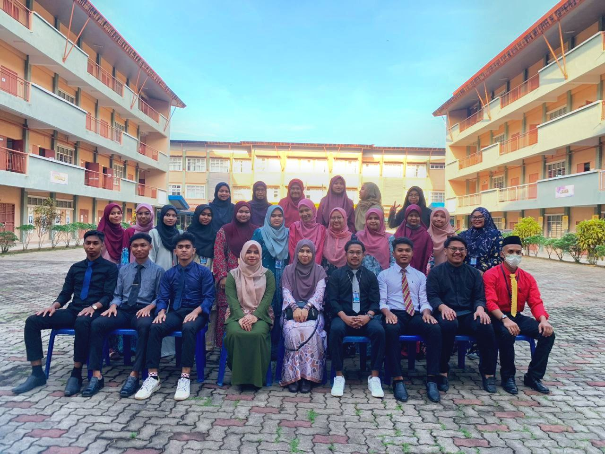
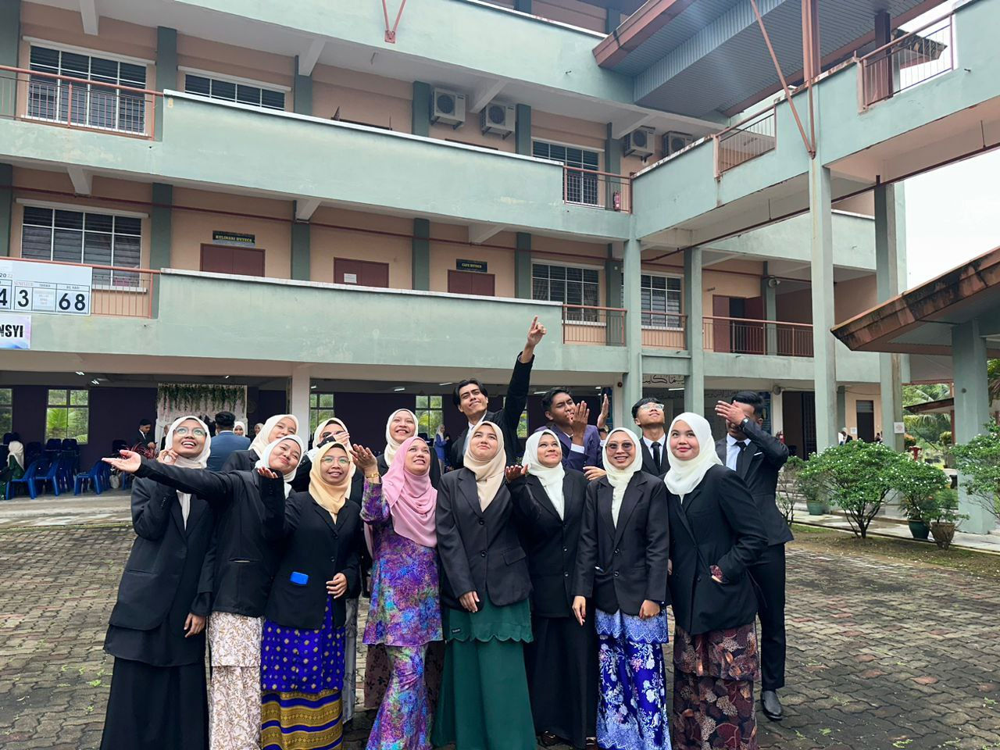
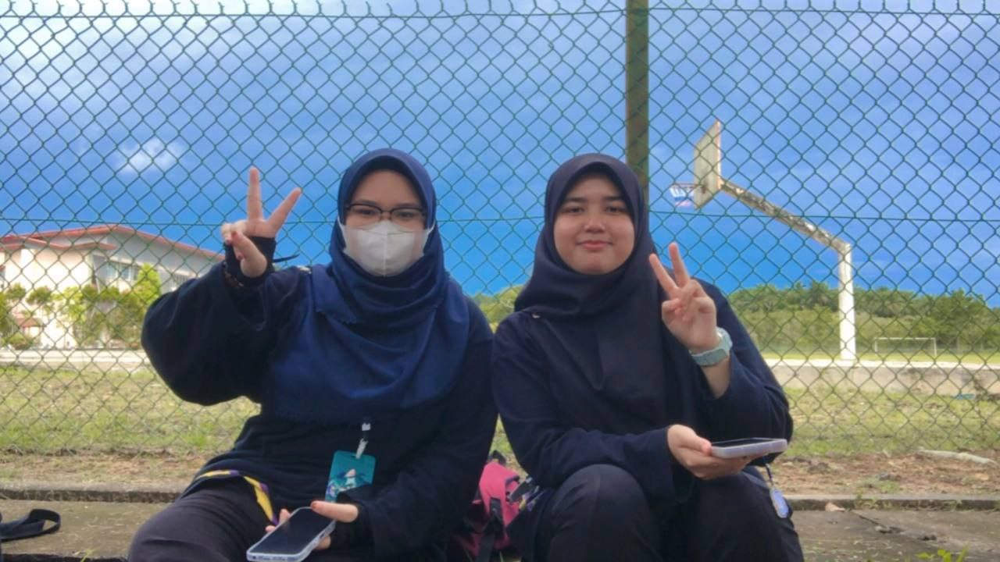

Form 6 Journey!

For me, After high school end, form 6 one of the tough year I have been ever. Form 6 was hard during Pandemic. It's hard to focus and study online. For my first semester, half of it is online class. After we can finally attend face to face class it was so much better. It easy to interect directly with teachers and classmate.
It was lonely when I had to separate from my friend that usually help and guide me I was behind in class. I had to pick up myself so I won't get behind. However I do end up confessing at my parents on how tired and hard I feel back then but my parents assure me everything will be fine and support me during those time.

Then in a blink of eyes, I already in semester 2, for me if I back down or dropping form 6 it would waste my time because I already half of it so I decide to continue. Was it hard? Yes! I won't deny that. I do discuss with my fellow classmate just to ask their opinion, I was afraid I'm the only one who feel like this but they also confess to me they feel the same.
We end up facing all this together. It is a bless to have kind and supporting classmate. We share the same struggle and end up supporting eachother during tough time.
They all are very caring classmates that I have ever encounter. Back then when it was school break we hangout at cafe or park. We play at the park. Playing with the slide, not caring our age. Acting like a child. I really enjoy that moment.

One of the person that stay longest with me through my form 6 was her. Her name is Nik Najwatul. I call her nik. I know her in high school but we were from the different class but she and I live near each other. Her house and mine just a few block away. After we slowly learn about us as a neighbor, that when we start became close to the point we decide to take some subject in form 6.
Maybe we were fate to be close to the point we were assigned in a same class. We sometimes went to the class together or skipped class as well. It was wild. For two years we spend most of our time together and obviously there is no banquet that last forever. Everything end after form 6 was done. She decide to pursue in something different than me. We start going with our own path without looking back. Now we barely talk or even chat. We all are busy but maybe next time? If we will meet eachother again.